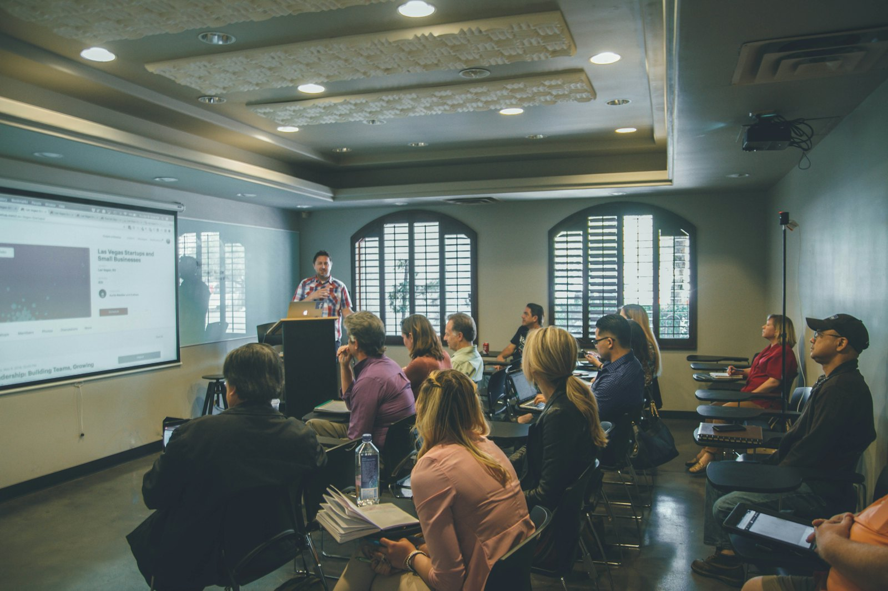

Events
Upcoming programming and past sessions.
Confirmed dates, locations, registration details, and materials will appear here.
Upcoming
No events are currently posted.
HCG will add dates, locations, registration details, and any confirmed Active Membership designation when the schedule is available.
Ask about future programming